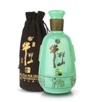

产品中心
好酒自然香，尽在酒不同
-
四年纯坤沙53度 贵州茅台镇酱香型白酒陈年老酒500ml
特色：酱香型大曲酒之典型
产地：贵州...
-

白酒 二锅头 百年和之牛 52度 浓香型 单瓶装 500ml
特色：火蒸馏，掐头去尾，贮陈精酿而成
产地：北京...
-
贵州茅台镇匠心1988 纯粮原浆酱香型坛装白酒53度500ml
特色：酱香型大曲酒之典型
产地：贵州...
-
福禄浓香型白酒52度500ml 瓦罐白酒
特点：浓香型
产地：四川...
-
2018-08-19
历史上最原始的酿酒方法
中华网食品讯：传说中的黄帝时期、夏禹时代存在酿酒这一行业，而酿酒之起源还在此之前。远古时人们可能先接触到某些天然发酵的酒，然后加以仿制。国内学者普遍认为，龙山文化时期酿酒是较为发达的行业。酿酒原料不同，所用微生物及酿造过程也不一样。酒曲酿酒是中国酿酒的
more
-
2018-08-19
中国白酒的历史和常识
众所周知，白酒都是由原酒(基酒)经过严格工艺和流程勾兑而成。...
-
2018-08-19
酿酒设备最正确的选择方法
俗话讲丰产靠酒曲，丰收靠设备，如果没有一个好的酿酒设备，那么...

2018-08-19
白酒定制：酱香型白酒有哪些品鉴方法？
若是无色透明玻璃瓶包装，把酒瓶拿在手中，慢慢地倒置过来，对光...
关于我们
共饮酒不同，品高心从容
卓越品质，源于坚持。公司致力于酿造有机白酒，提倡健康生活，要“让中国白酒的质量看得见”。在行业率先打造“有机高粱种植基地”，建立并完善有机、质量、安全、环境、测量、能源六大管理体系，实现从农田到餐桌的可追溯；搭建起国家固态酿造工程技术研究中心、国家酒检中心、国家博士后工作站等八大科研平台，以强大的科技力量支撑推动产品的持续创新升级；以尝评委员会、酿酒技术专家委员会、消费者尝评委员会为关键机构，确保每一瓶酒的绝佳品质。